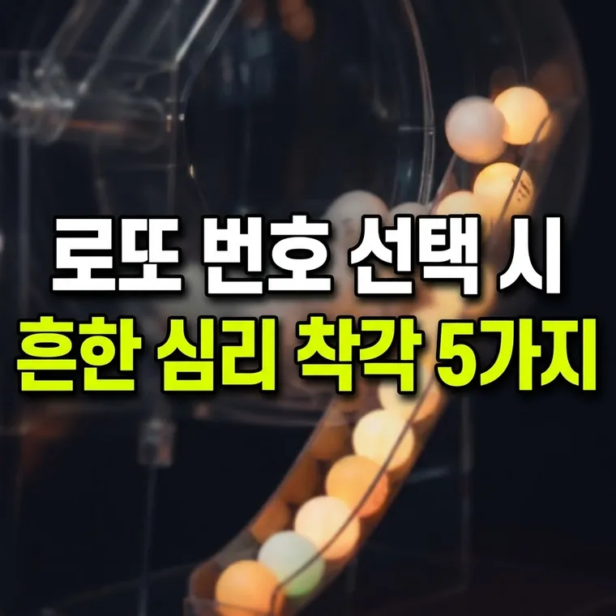

도박 오류(Gambler's Fallacy)란? 로또 번호 선택 시 흔히 범하는 심리적 착각 5가지
도박사의 오류는 독립된 사건에서 이전 결과가 다음 확률을 바꾼다고 믿는 착각입니다. 오래 안 나온 번호나 직전 회차 번호도 다음 회차 당첨 확률은 다른 번호와 똑같이 8,145,060분의 1입니다.

확률의 세계에서 인간의 심리가 만들어내는 착각
로또 복권 번호를 고를 때 우리는 자신도 모르게 특정한 기준이나 규칙을 적용하곤 합니다. "지난주에 나왔던 번호는 이번에 안 나오겠지?", "1, 2, 3, 4, 5, 6 같은 연속 번호는 절대로 당첨될 리 없어"라는 생각들이 대표적입니다.
하지만 앞서 독립시행을 다룬 글에서 설명했듯이 매 회차 추첨은 과거의 결과와 아무런 상관이 없는 '독립시행'입니다. 그럼에도 불구하고 수많은 사람들이 번호를 선택할 때 일종의 패턴이나 흐름이 존재한다고 믿는 경향이 있습니다.
이번 글에서는 통계학과 행동경제학에서 자주 언급되는 '도박사의 오류(Gambler's Fallacy)'의 개념을 다루고, 우리가 로또 번호를 고를 때 무의식적으로 범하게 되는 5가지 심리적 착각을 살펴보겠습니다.
도박사의 오류(Gambler's Fallacy)의 정의와 원인
도박사의 오류란 서로 독립적으로 일어나는 확률적 사건에 대해, '이전 사건의 결과가 다음 사건의 확률에 영향을 미친다'고 착각하는 심리적 현상을 말합니다.
가장 유명한 예시는 1913년 몬테카를로 카지노의 룰렛 게임입니다. 당시 룰렛 테이블에서 검은색이 26번 연속으로 나오는 기이한 현상이 일어났습니다. 플레이어들은 "이제는 빨간색이 나올 차례다"라며 빨간색에 막대한 돈을 걸었지만, 검은색이 계속 나오면서 큰 손실을 입었다고 전해집니다.
이처럼 인간의 뇌는 무작위로 일어나는 연속된 사건 속에서 어떻게든 '균형'이나 '패턴'을 찾으려는 강한 본능을 지니고 있습니다. 이러한 편향이 로또 번호 선택에도 그대로 반영되는 것입니다.
로또 번호 선택 시 흔히 범하는 심리적 착각 5가지
복권 구매자들이 번호를 선택할 때 자주 빠지는 대표적인 5가지 심리적 편향은 다음과 같습니다.
- "장기 미출현 번호는 곧 나온다"는 착각: 수십 주 동안 추첨되지 않은 숫자를 '조만간 나올 때가 된 번호'로 판단하여 고정수로 선택하는 경우입니다. 공 기계는 과거 추첨 이력을 기억하지 못하므로, 오래 안 나온 번호의 다음 회차 당첨 확률 역시 다른 번호와 똑같습니다.
- "직전 회차 당첨 번호는 제외한다"는 착각: 지난주에 나왔던 번호 6개가 이번 주에 다시 나오는 것은 느낌상 불가능해 보입니다. 하지만 수학적 확률상 지난주 당첨 조합이 이번 주에 똑같이 나올 확률과 완전히 새로운 조합이 나올 확률은 동등합니다.
- "균형 잡힌 번호 조합이 당첨 확률이 높다"는 착각: 홀수와 짝수의 비율을 3:3으로 맞추거나, 번호의 합이 특정 구간(예: 100~150)에 들어가도록 조합해야 당첨 확률이 올라간다고 믿는 심리입니다. 전체 조합 중 그러한 유형이 차지하는 비중이 클 뿐, 특정 단일 조합의 당첨 확률이 달라지는 것은 아닙니다.
- "연속된 숫자 조합은 피해야 한다"는 착각: '1, 2, 3, 4, 5, 6' 같은 극단적인 연속 번호는 당첨될 수 없다고 생각하여 피하는 경향이 강합니다. 실제로는 모든 조합의 당첨 확률이 동일합니다. 다만 사람들이 이런 번호를 많이 피한다면 당첨 시 나눠 받는 사람이 적을 수는 있지만, 당첨 확률이 달라지는 것은 아닙니다.
- "나만의 행운 패턴이 존재한다"는 착각: 생일, 기념일, 혹은 특정 마킹 모양(직선, 십자가 형태 등)으로 번호를 지정하는 방식입니다. 이는 확률을 높여 주지 않으며, 1부터 31 사이의 숫자에 사람이 몰리기 쉬워 같은 번호를 고른 사람이 많아질 수 있습니다.
번호를 고를 때 기억할 점
- 로또 추첨은 순수한 무작위입니다: 로또 추첨은 사람이나 인공지능의 의도가 개입되지 않는 물리적인 무작위 추첨입니다.
- 분석에 너무 많은 시간과 돈을 쓰지 마세요: 번호 분석에 과도한 시간이나 비용을 쓰는 것은 통계적으로 의미가 없으며, 소액으로 건전하게 즐기는 것이 좋습니다.
- 번호 분석과 추천은 재미 요소일 뿐입니다: 시중의 번호 분석 기법이나 번호 추천은 번호를 고르는 개인의 재미일 뿐, 당첨 확률을 높여 주는 과학적인 수단이 아닙니다.
번호를 고를 때 어떤 느낌이 들더라도 매 회차의 확률은 같다는 점만 기억하시면 착각에 덜 흔들립니다.
· 도박사의 오류는 독립된 확률 사건에서 과거의 결과가 미래의 확률을 결정한다고 믿는 심리적 착각입니다.
· 오래 안 나온 번호나 직전 회차 번호의 다음 회차 당첨 확률은 다른 모든 번호와 똑같이 8,145,060분의 1입니다.
· 패턴이나 특정 비율을 맞추는 것은 번호 고르는 재미를 줄 수는 있지만, 수학적 당첨 확률을 변화시키지는 못합니다.
이 글의 기준과 예시는 2026년 10월 기준입니다. 법령이나 제도가 바뀌면 내용이 달라질 수 있으니, 신청·신고·계약 전에는 해당 기관에서 최신 기준을 확인하세요. 계산 결과와 설명은 참고용입니다.
🔮 다음 글 예고
다음 글에서는 동행복권 건전구매 프로그램의 자가진단과 건전구매 서약을 알아봅니다.